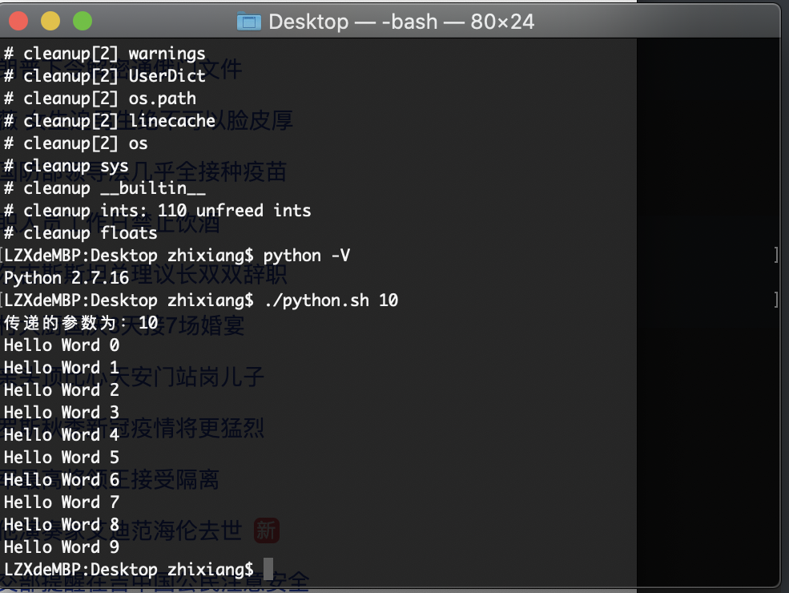

python脚本搭建编译框架
背景
目前博主，接触到了一些资深开发工程师，分享了一套采用python语言搭建提高效率的编译框架，抽离公共部分，组建独立仓库，给手机负责通信的模块代码搭建编译框架，并且将很多关于各个团队的feature宏抽离出来，从第三方的源代码解耦出来，在一个单独的fd文件中进行管控，而各平台的差异在平台专有的json文件中描述，并且可以更快的模块化编译。勾起了博主比较想深入研究一下这套东西的欲望。
大多数Linux发行版本中，python是其标准系统组件，可以直接运行用python编写的代码。并且通常情况下，用python编写的脚本易于理解、扩展、维护和复用，性能也优于shell脚本，并且python本身更能让你专注于解决问题而不是去搞明白语言本身。有很多公司采用python搭建编译框架。
例如，一些手机设备厂商，会购买高通很多芯片平台，这些芯片平台的软件代码购买过来后，手机设备厂商有很多客制化的代码，需要移植在各个平台，并且各个平台有自己的一套shell编译脚本，需要单独移植和适配。采用pthon编译框架后，单独的仓库和分支，可以方便很多feature和多平台的管理，并且可以快速适配新平台，提高了代码移植和适配的效率降低出错的可能性。
查看高通给过来的源代码，使用的就是python来组织编译的脚本，一些终端设备厂商更多的是向高通看齐。
shell脚本运行python
在模块编译的时候，大家都习惯了shell脚本编译，于是乎就有了在shell脚本中去运行pthon脚本。
shell脚本中，指定python编译版本(which python指令查看应用安装路径)和传递给python脚本的参数：
1 | echo "传递的参数为：$*" |
python脚本：
1 | # -*- coding: utf-8 -*- |
运行结果：

make
终端设备的代码主要分为AP(application processor)侧和CP(communication processor)侧，CP侧主要是一些通信模块，例如，基带处理器(baseband processor)、rf器件等，对应的代码这块都是用C/C++语言编写，对于这些代码的编译就有很多值得学习的地方。
对于C/C++语言的编译分为四个阶段：预处理、编译、汇编和链接
未完待续…….